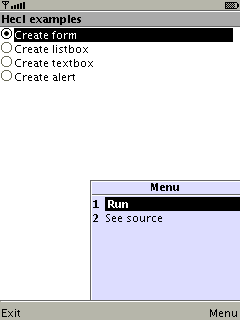
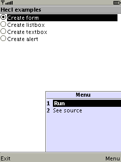

| Hecl example app for J2ME | |
|---|---|
 |
 |
| Edit the code... | ... and run it! |

The Hecl Programming Language is a high-level scripting language implemented in Java. It is intended to be small, extensible, extremely flexible, and easy to learn and use.
I personally can't stand web pages for new programming languages without a quick link to some examples. Here you are: Hecl Examples
Why Hecl? Hecl is intended as a complement to the Java
programming language, not a replacement. As such, it
tries to do well what Java doesn't, and leaves those
tasks to Java for which it is best suited. Hecl aims to
be a very immediate language - you can pick it up and
start doing useful things with it quickly. It is also
meant to be easy to learn. Where Java is verbose and
rigid, Hecl is forgiving and quick to write. For
instance,
System.out.println("Hello World"); vs
puts "Hello World" - 41 keystrokes
(shifted letters count double) versus 22. Hecl is built
to "scale
down".
This makes Hecl ideal for large applications written in Java that would like to provide a user friendly scripting interface, rather than, say, a clunky XML based configuration system. Examples include: scripted web pages, command/control logic in long running applications, and, I'm sure, many environments I've never considered.
| Hecl example app for J2ME | |
|---|---|
|
 |
| Edit the code... | ... and run it! |
Hecl is also a small language with a minimal core. The idea is to provide only what's necessary in the language itself, and as needed, add in extensions for specific tasks. Core Hecl is small enough to run on my Nokia 3100 cell phone as a J2ME application, presenting the interesting possibility of writing scripts, or at some point, maybe even scripting entire applications, for devices running embedded Java. As an example, you can try this MIDlet: Hecl.jar Hecl.jad
Licensing: Hecl is available under the liberal Apache 2.0 license. Which says, more or less, that you may use Hecl in your own applications, even if they are not open source. You have to give me credit, though. Read the license itself to clear up any doubts.
About: Hecl was written by David N. Welton. Major contributions by: Wojciech Kocjan